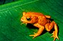
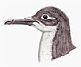
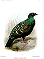
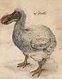
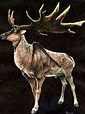
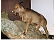

Animales en peligro de extinción
Algunos de los animales más extraños de nuestro planeta caminan en la cuerda floja de la extinción. El fotógrafo Tim Flach ha pasado más de dos años inmortalizando en fotografías algunos de ellos, los más emblemáticos, curiosos y llamativos.
Desde que la vida surgió en la Tierra, su fauna se ha transformado en muchas ocasiones. Durante miles de años y por diversas razones, se han producido 5 grandes extinciones de las especies que han poblado la Tierra: son las conocidas como las 5 extinciones masivas. En la actualidad, y debido a la acción de los seres humanos, el planeta está al borde de los que los científicos denominan la Sexta Gran Extinción.(Lista de especies afectadas en España, Mexico, Perú y el mundo). Pero, ¿es realmente un problema tan grave? Para conocer a fondo el problema de la pérdida de biodiversidad se deben conocer distintos aspectos y conceptos clave para entender mejor a nivel biológico la cuestión:
Se considera que una especie está en peligro de extinción cuando todos los representantes de la misma corren el riesgo de desaparecer de la faz de la Tierra.
Según datos de la Unión Internacional para la Conservación de la Naturaleza, el organismo internacional con mayor potestad sobre el problema, aproximadamente 5.200 especies de animales se encuentran en peligro de extinción en la actualidad. Además, en un desglose por clase, se encuentran en peligro de extinción el 11% de las aves, el 20% de los reptiles, el 34% de los peces y 25% de los anfibios y mamíferos.
Existen múltiples causas por las que una especie puede llegar a encontrarse al borde de la extinción. Las razones pueden resultar tremendamente particulares para cada especie, pero en líneas generales, entre las mayores amenazas se encuentra la destrucción y fragmentanción de sus hábitats; el cambio climático; la caza y tráfico ilegal; y la introducción de especies exóticas.
ESPECIES EXTINTAS
| Extinción aproximada | Nombre común | Nombre cientifico | Imagen | Hábitad |
|---|---|---|---|---|
| Desde 1989 | Sapo dorado o sapo de Monteverde | Incilius periglenes |  | Bosque de Monteverde, Costa Rica |
| Desde mediados de 2017 | Jambato esquelético | Atelopus longirostris |  |
Noroeste de Ecuador |
| Desde probablemente el siglo XIV | Pardela canaria de la lava | Puffinus olsoni |  | En el archipiélago Canario, España |
| Desde entre 1783 y 1823 | Paloma de Liverpool o paloma de manchas verdes | Caloenas maculata |  | Se cree que habito la polinesia Francesa |
| Desde c. 1662 | Dodo o dronte | Raphus cucullatus |  | Isla de Mauricio |
| Desde c. 5000 a. C. | Alce irlandés, ciervo gigante o megalocero | Megaloceros giganteus |  | En Europa y gran parte de Asia |
| Desde el 3000 a. C. | Cabra-rata de las Baleares | Myotragus balearicus |  | Islas de Mallorca, Menorca, Cabrera y Sa Dragonera, España |
| Desde c. 1700 a. C. | Mamut lanudo o mamut de la tundra | Mammuthus primigenius |  |
Norte de Eurasia y América del Norte |
| Desde 1768 | Vaca marina de Steller | Hydrodamalis gigas |  |
Costas del océano Índico y parte del océano Pacífico desde Taiwán hasta Nueva Guinea |